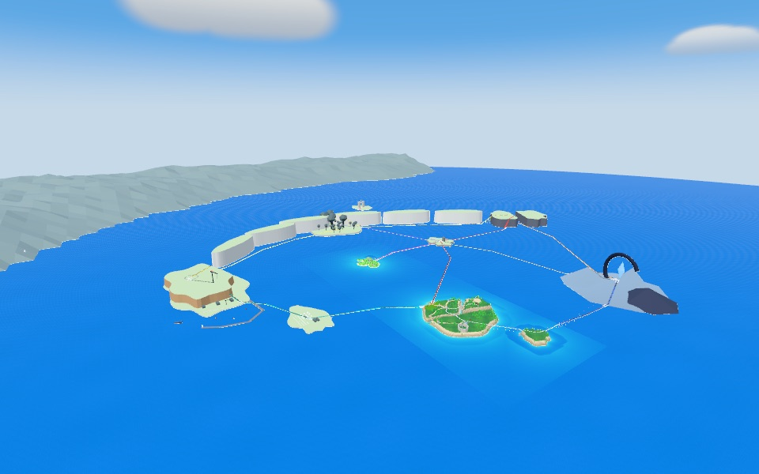
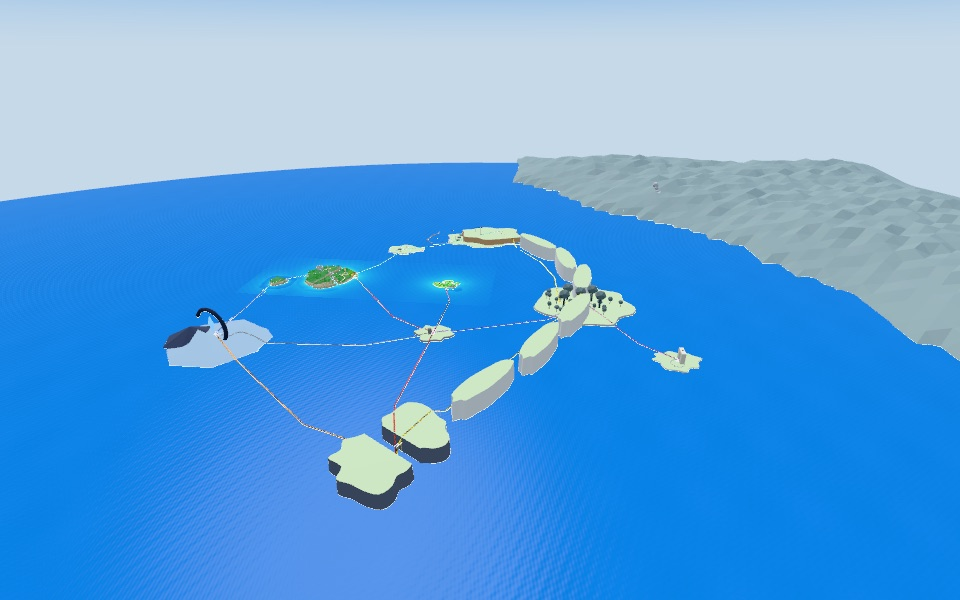
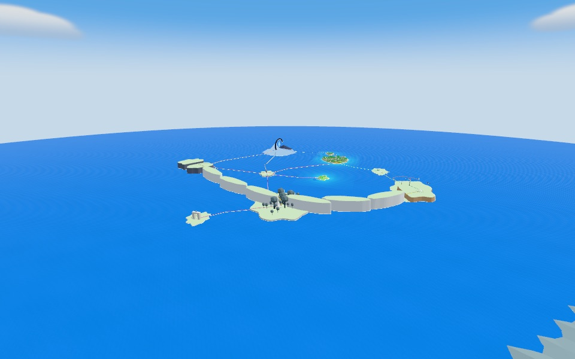
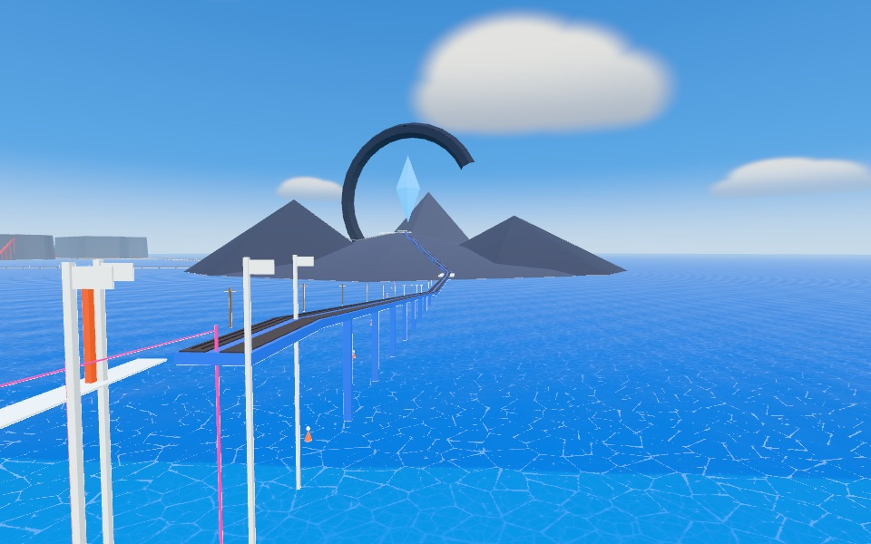
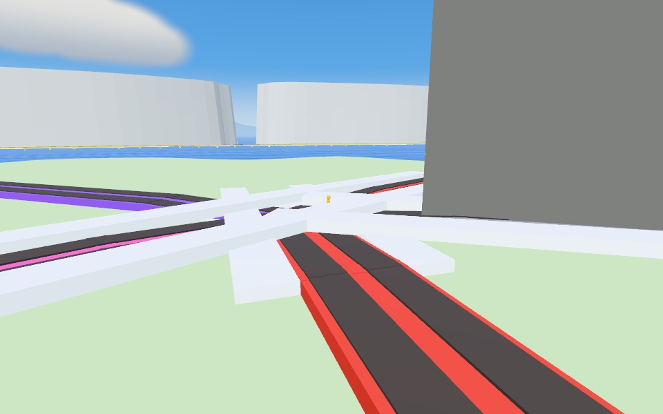
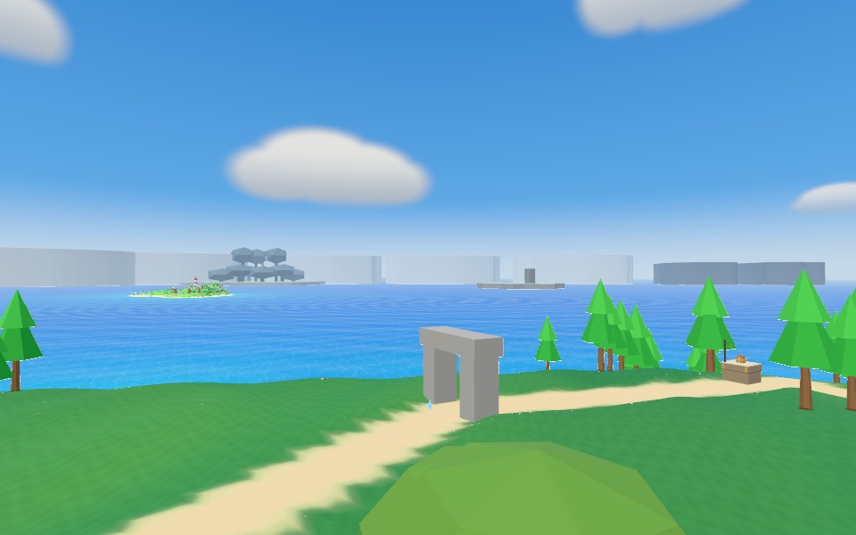
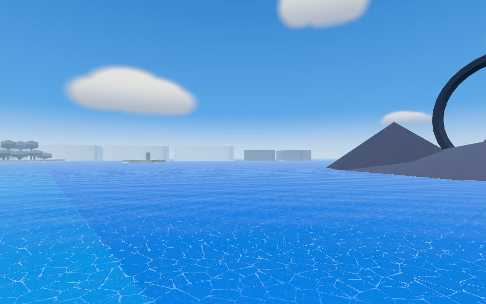
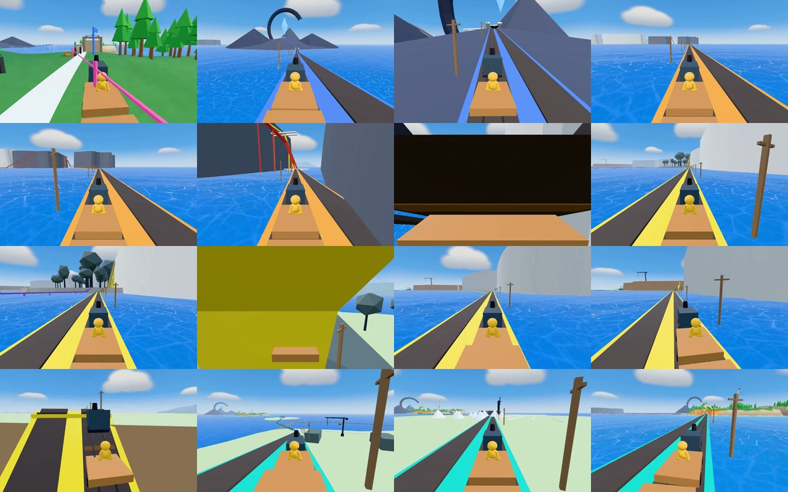

World blockout
The whole map, rough, so the connections work before each area is built in depth (owner, 10 November). Sickle Isles geography from map-prototypes.html, today's Home, Far Head and pier, the crossing toward Ring Island, and every future line as a train service. Place-local metres, north up, 500 m grid. The plan: docs/plans/world-blockout.md.
Areas
| Area | Landmark | Produces | New verb | Hours | Solo clock |
|---|---|---|---|---|---|
| Home (Threefold Reach) | The Needle Bell, the forge chimney, the turntable | Logs, stone, rails | Chop, haul, lay track; the great beam | 0.6 h | 0–0.6 |
| Split-rock Works | The split quarry face and kiln stack | Footings | Strike seams with the breaker; carry footings | 0.6 h | 0.6–1.2 |
| Ring Island | The broken ring and its floating shard | Steel (the longer boiler first) | The Meet: glide the gap, brace the leaf, strike the rivet | 0.6 h | 1.2–1.8 |
| First branch: High Gorge or Canopy Town | The split stack / the mother trees over the Wall | Copper / fibre | Powered pick and hook reel / carry sling and glider cloth | 1.2 h | 1.8–3.0 |
| Bell Rock and the bay shortcut | The granite pinnacle in the shallows | Crystal seeds (by hand) | Hook practice; the shortcut home | 0.5 h | 3.0–3.5 |
| Second branch | The other of the pair | The other material | The other branch's tool | 0.7 h | 3.5–4.2 |
| The sea cave, Saltpan and High Port | The 75 m lit crane on the cliff edge | Town services; the faster engine; seed cradle | Break the cave (powered pick); slide the salt flats; crane lift | 0.8 h | 4.2–5.0 |
| White Wall line (the ring closes) | Six 120 m chalk islets read as one wall | Crystal collars carry the last span | Collar the deep gap; the first lap | 0.8 h | 5.0–5.8 |
| Lantern Notch, the causeway, the Original Island | The sea arch; the causeway lamps; the classic island | The ending | Glide from the Canopy ledge; light the lantern; ride to The Boogler | 0.3 h | 5.8–6.1 |
Lines
Ride time = cruise, plus starting and stopping (3.5 m/s² at 20 m/s, 4.5 at 25) and the dwell (5 s, 4 s) at every stop; boarding not included.
| Line | Halts | km | End to end, 20 m/s | 25 m/s |
|---|---|---|---|---|
| Line 2 to High Gorge | Ring Island halt · High Gorge | 2.51 | 2:16 | 1:50 |
| North-south line | High Gorge · Bell Rock · Original Island | 1.90 | 1:57 | 1:35 |
| Bay line | West landing · Bell Rock · Canopy Town · Lantern Notch | 3.31 | 3:18 | 2:41 |
| Bay trestle | Ring Island halt · Bell Rock | 1.58 | 1:30 | 1:13 |
| Cave line and the White Wall | West landing · Saltpan Halt · Port Quay · Canopy Town · High Gorge | 5.33 | 5:09 | 4:11 |
Legs
| Leg | From → to | Line | Stage (Gorge first / Canopy first) | km | 20 m/s | 25 m/s |
|---|---|---|---|---|---|---|
| First sea crossing | pier → ring | Line 2 to High Gorge | 2 / 2 | 0.46 | 0:34 | 0:28 |
| Stack line | ring → gorge | Line 2 to High Gorge | 3 / 5 | 2.05 | 1:53 | 1:32 |
| Bay trestle | ring → bell | Bay trestle | never / 3 | 1.58 | 1:30 | 1:13 |
| Bell Rock to Canopy | bell → canopy | Bay line | 5 / 3 | 1.20 | 1:11 | 0:58 |
| The bay shortcut | home → bell | Bay line | 4 / 4 | 1.23 | 1:12 | 0:59 |
| Stack incline | bell → gorge | North-south line | 4 / 5 | 1.16 | 1:09 | 0:56 |
| Sea-cave line | home → saltpan | Cave line and the White Wall | 6 / 6 | 0.74 | 0:48 | 0:39 |
| Saltpan to the quay | saltpan → quay | Cave line and the White Wall | 6 / 6 | 0.51 | 0:36 | 0:30 |
| Crane lift up the cliff | quay → port | 6 / 6 | 0.48 | 0:35 | 0:29 | |
| White Wall line, south | quay → canopy | Cave line and the White Wall | 7 / 7 | 2.11 | 1:56 | 1:34 |
| White Wall line, north | canopy → gorge | Cave line and the White Wall | 7 / 7 | 1.97 | 1:49 | 1:28 |
| Notch line | canopy → notch | Bay line | 8 / 8 | 0.88 | 0:55 | 0:45 |
| The lantern causeway | bell → original | North-south line | 8 / 8 | 0.75 | 0:48 | 0:39 |
Double track
Every corridor is two tracks on 4 m centres (the gauge is Place's 1 m, on a 3.6 m deck: a 7.6 m formation), bridges, cuttings, tunnels and the pier crossing included. Every halt has a platform outside each track. Each terminus turns a train back without reversing: a crossover (✕) inside the platforms, or a 40 m-radius turning loop (○) where the island has room.
| Line | Turnbacks |
|---|---|
| Line 2 to High Gorge | High Gorge: crossover |
| North-south line | High Gorge: crossover; Original Island: turning loop |
| Bay line | West landing: crossover; Lantern Notch: turning loop |
| Bay trestle | Ring Island halt: crossover; Bell Rock: crossover |
| Cave line and the White Wall | West landing: crossover; High Gorge: crossover |
Today's single-track line 1 and line 2 stay where they are. A second track 4 m off them meets these:
| Where | Along the line | Meets | Other side free |
|---|---|---|---|
| Line 1, left side | 0–4 m | the turntable | no |
| Line 1, left side | 6–32 m | the Village platform | no |
| Line 1, left side | 112–112 m | a drop over 6 m | yes |
| Line 1, left side | 114–114 m | a bank | yes |
| Line 2, left side | 0–4 m | the turntable | no |
Seen before it's reached
| From | What | When |
|---|---|---|
| Home hilltop / telescope | Ring Island shard and the raised leaf | minute one; the leaf from the Split-rock finale |
| Home, south-west skyline | High Port crane, lit | minute one; reached at 4.2 h |
| West landing | The sea cave in the sandstone face, 65 m | minute one; opened at 4.2 h |
| Home across the bay | The Original Island (The Boogler's) | minute one; reached last |
| Pier head | The raised leaf, 280 m; the White Wall beyond | from 1.0 h |
| Ring top (aperture) | The Gorge split, end-on | from 1.8 h |
| Ring top | Canopy's mother trees over the Wall | from 1.8 h |
| Bay line train | The sunken causeway pointing at the Original Island | from 3.0 h |
| Canopy Town west shore | The Notch ledge | first Canopy visit; used at 5.8 h |
| High Port, the Notch | The mainland city (never reached) | from 4.2 h |
Doubling back
| Where | With | When (solo) | The ride back |
|---|---|---|---|
| Ring Island upper gallery ("the Closest Pew") | The first branch's ability (hook reel or glider cloth) | about 3.0 h | Line 2 to Ring Island |
| Split-rock's upper seam | The powered pick or the carry sling | about 3.5 h | Bay line home, then line 2 |
| Home's sea cave (the West landing's sandstone face) | The powered pick (High Gorge) | about 4.2 h | Bay line home; then the cave line opens |
| The first branch's hidden section (the falls cave / the Notch ledge) | The second branch's ability | about 4.6 h | Bay line, Bell Rock, stack line |
| Ring Island again: the train threads the ring | The closed ring and the express fitting | about 5.8 h | White Wall line round to the stacks |
The 3D greybox
Dev: ?greybox=sickle (rides along every line, the full loop). Live client:
?blockout=world (walkable massing, visual track).







